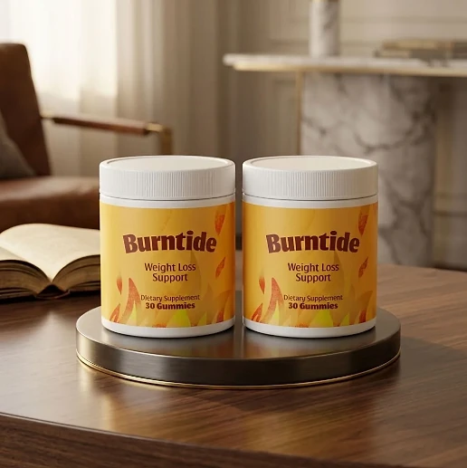
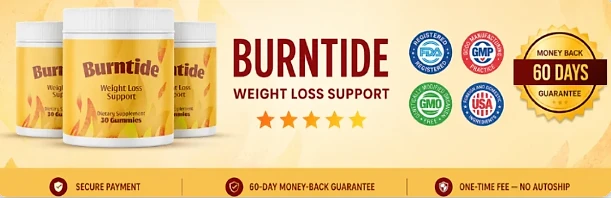

What Is Burntide And How Does It Work?
Burntide is a dietary supplement in gummy form designed to support healthy weight management, metabolism, and steady energy for adults who want to address the constant cravings, low energy, and slow progress that can make weight goals feel out of reach through a natural, dependable approach — without complicated routines or temporary quick fixes.
It utilizes a simple daily gummy built around 250 mg of Apple Cider Vinegar, in a base made with Pectin and Citric Acid, to support appetite, metabolism, and digestive comfort, helping the body maintain its natural balance throughout the day.
The ingredients in Burntide are familiar, food-derived components that, according to the official website, make up a simple, focused approach: 250 mg of Apple Cider Vinegar in one daily gummy, with no caffeine or stimulants, particularly for adults who prefer one simple gummy a day over multiple products or complicated plans.
Rather than acting as a short-lived artificial fix, Burntide focuses on a steady, routine-based approach, working gradually alongside daily habits to help maintain satiety between meals, craving control, and long-term wellness.
With consistent daily use, many users report fewer cravings during the day, steadier energy, and a gradual sense of control over their eating habits, especially when combined with a balanced diet, good sleep, and regular exercise.
From a practical standpoint, Burntide is a daily apple cider vinegar gummy for appetite and metabolism support designed to support wellness from within — helping you stay active, energized, and in control of your health.
Manufactured in the USA with globally sourced ingredients, according to the product label, Burntide is designed for regular daily use, focusing on safety, purity, and quality for those seeking a natural, non-prescription route to healthy weight management.
Burntide Ingredients
Every gummy of Burntide contains one active ingredient on the Supplement Facts panel, 250 mg of Apple Cider Vinegar. The official website presents this as a deliberate choice — one focused ingredient instead of a long list — to support metabolism, appetite, and steady energy as part of a consistent daily routine:
Apple Cider Vinegar (250 mg): The single active ingredient of the formula, a fermented apple product traditionally used to support metabolism and appetite control.
Pectin: A natural fruit fiber that gives the gummy its texture. It appears on the label under other ingredients, not as an active.
Citric Acid: A compound naturally found in citrus fruits, also listed on the label under other ingredients.
Together, these components make up a simple gummy built around one ingredient. The other ingredients on the label are cane sugar, glucose syrup, water, sodium citrate, natural flavor, natural coloring, and starch, with 6 calories and 1.5 g of sugars per gummy, and the official website describes the formula as stimulant-free, non-GMO, and gluten-free.
Burntide is designed for daily use, offering a natural, non-prescription approach to supporting metabolism and appetite, without caffeine or complicated routines.
Burntide Side Effects
Burntide is generally considered well tolerated and is designed for adults of different ages and lifestyles who are looking for a safe, natural, and balanced approach to weight management, especially those who prefer an easy one-gummy daily routine to support appetite, metabolism, and well-being without resorting to risky solutions with severe side effects.
All ingredients used in Burntide are described on the official website as stimulant-free, non-GMO, and gluten-free, and Burntide is manufactured in the USA with globally sourced ingredients, according to the product label, in an FDA-registered, GMP-certified facility, according to the official website, reinforcing consistency, safety, and reliability.
With no widespread reports of serious side effects, Burntide is generally considered a well-tolerated option. Because apple cider vinegar is acidic, people with a sensitive stomach or acid reflux may prefer to start with caution, and anyone who takes medication to manage blood sugar should speak with their doctor first. It is not intended to diagnose, treat, cure, or prevent any disease, and individual results may vary.
According to the label, pregnant or nursing mothers, children under the age of 18, and individuals with a known medical condition should consult a physician before using Burntide. The same applies to anyone taking prescription medications, ensuring it fits safely within their personal wellness plan.
Burntide Dosage
The recommended Burntide dosage is one gummy a day with an 8 oz. glass of water, and it is designed to fit easily into a daily routine, making consistency simple and convenient. Formulated as an easy chewable gummy, it requires no powders to mix, no vinegar drinks to prepare, and no capsules to swallow.
The recommended approach, as printed on the label, is to take one Burntide gummy once a day. For best results, the label suggests taking Burntide 20 to 30 minutes before a meal, at the same time each day, or as directed by your healthcare professional, which allows its ingredients to work consistently.
For best results, consistency is key. Each bottle contains 30 gummies, a one-month supply, and because nutritional support for appetite and metabolism builds gradually, many customers make it part of an ongoing wellness routine.
There is no need for complex schedules or multi-step routines. One simple daily gummy is designed to build lasting support gradually alongside a balanced diet, good sleep, and an active lifestyle. The label also advises storing the bottle in a cool, dry place away from heat and light.
As with any dietary supplement, it's important not to exceed the recommended dose and to check the label on your bottle. Burntide works best when used regularly, combined with proper hydration, balanced nutrition, and healthy daily habits.
Burntide – Refund Policy
You can order Burntide with confidence, knowing that every purchase is protected by a 60-day money-back guarantee. This allows you to try the formula and decide if it delivers the support you expect.
According to the returns policy on the official website, you have 60 days from the date of your order to request a refund, and after that period a refund can no longer be requested. To obtain it, the bottles of the order must be sent back to the fulfillment center within those 60 days.
How the refund process works: If you decide Burntide is not right for you, return the bottles with a written note containing your order ID, your full name and the address where the shipment was received, your email address and phone number, and the original packing slip, if available. The policy text is not fully consistent about which bottles must go back — one passage says all bottles, another says only unused ones — so it is worth confirming with customer support before shipping.
Customer Support Contact Information: support@healthyconsumer.us or +1 (833) 923-7829, as printed on the product label. According to the official website, emails are answered within 24 hours, and support is available Monday through Friday, 9 AM to 6 PM EST.
Return Address: The policy lists a PO Box in Ogden, Utah, as the destination for returns; ask customer support to confirm the full address before sending anything back.
This refund policy is designed to give customers a clear and transparent experience when trying Burntide.
Burntide Customer Reviews
-
Henry C. — Austin, TXVerified Purchase – 6 Bottles
“Day 6 was when it clicked — I stopped having to remind myself. After that it just happened. My mornings feel lighter, my energy holds through the afternoon, and my clothes are starting to fit the way I want them to.”
-
Samuel H. — Columbus, OHVerified Purchase – 3 Bottles
“I almost quit in week two. So glad I didn't. Week five felt like a completely different month — steadier energy, fewer cravings hijacking my plans, and I finally feel like my body is working with me instead of against me.”
-
Harper E. — Phoenix, AZVerified Purchase – 6 Bottles
“No crash, no jitters. It just slid into my morning right next to the coffee and stayed there. I feel lighter, more consistent, and honestly more like myself than I have in years.”
Burntide – Where To Buy
Burntide is sold through its official website, so if you decide to try it, it's important to be careful about where you purchase it. The official website is the only sales channel the manufacturer lists, and it does not point to marketplaces such as Amazon, eBay, or Walmart.
Listings on third-party platforms may look similar but cannot be verified as authentic, raising concerns about safety, quality, and ingredient freshness. Products purchased outside the official source may not be covered by the 60-day guarantee.
For this reason, most customers recommend purchasing Burntide only through the official website. Buying directly from the official source ensures you receive the authentic original product, manufactured in the USA, with access to customer support and the full guarantee. According to the official website, every purchase is a one-time order, with no automatic renewals, hidden fees, or surprise charges.
To avoid counterfeit batches and ensure maximum quality, always verify that you are ordering from the official Burntide website before completing your purchase.
To ensure you’re getting the authentic product, most users choose to visit the official website.
Is Burntide A Scam?
Based on what the official website and the product label disclose, Burntide does not appear to be a scam. It is a real gummy supplement, sold through an established retailer, and formulated to support craving control, metabolism, and digestion as part of a consistent routine.
The ingredients used in Burntide — Apple Cider Vinegar, Pectin, and Citric Acid — are well known in the wellness field, and the label publishes a full Supplement Facts panel with the amount of apple cider vinegar in each gummy for transparency.
In addition to its simple formula, Burntide is manufactured in the USA with globally sourced ingredients according to the product label, and the official website is unusually direct about relying on a single ingredient, with a focus on safety, purity, and consistency.
Many users report fewer cravings and steadier energy throughout the day and an easy daily habit, making Burntide a practical option for those seeking natural support for weight management. Results vary from person to person, and no supplement replaces a balanced diet, regular exercise, or medical care.
Burntide is backed by a 60-day money-back guarantee, and orders are one-time purchases with no subscriptions or hidden charges. The return steps and the support contacts are published on the official website, which underscores the manufacturer's transparency with customers.
If you're looking for a simple daily gummy to support appetite, metabolism, and well-being without complicated routines, Burntide is worth considering — especially when purchased directly from the official website.
For those who want to verify product details or check current availability, the official Burntide website remains the safest option.

Check Availability On Official Website
